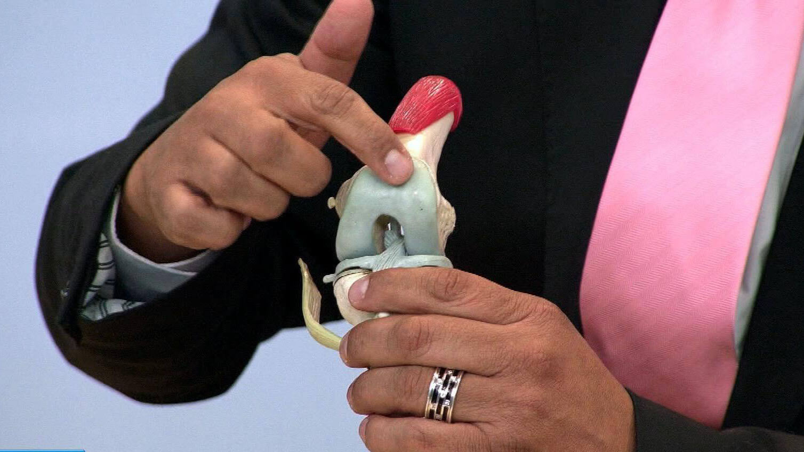
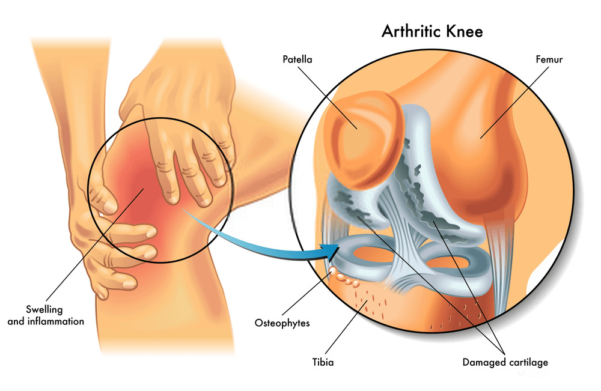

Me gusta


A 18.889 personas les gusta esto
"Cuando las articulaciones no te permiten llevar una vida normal, ¡lo único que te queda es esperar un milagro!" ¡Una entrevista exclusiva con el legendario hombre que hizo un milagro!
Buenos días, Dr. Borda. ¿Podría decirnos unas cuantas palabras sobre usted?
Nací en Trujillo. Me licencié de la Universidad de España en 1975 y conocí allí a mi futura esposa Estrella. Trabajé como ortopedista hasta el 2009.
¿Qué ocurrió en 2009 y por qué dejó su trabajo?
En 2007, a Estrella le diagnosticaron osteoartritis de la rodilla. La verdad es que fue un punto de inflexión en nuestras vidas y me parecía un terrible calvario en ese momento. Ella lo probó todo durante los siguientes 2 años: fisioterapia, geles y bálsamos, e incluso dejó de hacer ejercicio y tomó diversas vitaminas y suplementos alimenticios. Todo fue en vano. No le ayudó nada, y estábamos completamente destrozados los dos. No podía creer que no había nada que pudiera hacer para ayudar a mi esposa, incluso con mi experiencia médica. Nuestro sistema de salud me decepcionó bastante, así que quise averiguar si había una manera de darle una vida larga y feliz a mi ser más querido del mundo. Comencé a investigar.
¿De qué investigación está hablando? ¿Podría explicarnos un poco más?
Cuando te das cuenta de que tu esposa no podrá caminar en unos pocos años, quieres hacer todo lo posible para evitarlo. Estudié todos los materiales relacionados con enfermedades articulares, ya sea directa o indirectamente en el campo de la fisiología, la psicosomática y la bioquímica. Gasté casi todo mi dinero en descubrir los secretos de los mejores especialistas de Asia en este campo, quienes sin duda entendían los problemas de los pacientes con desgaste articular mucho mejor que nosotros.
Para diciembre de 2009, me di cuenta de que si mezclaba ciertos ingredientes, podría obtener un producto que aliviaría el dolor articular para siempre , pero me esperaba una sorpresa - en España no se vendían los ingredientes que necesitaba, así que pedí un poco de dinero prestado y los pedí de Asia. Los ingredientes necesarios llegaron un mes después, pero entonces me esperaba otra sorpresa - nadie quería hacer la mezcla que necesitaba en condiciones de laboratorio. Afortunadamente, me salvaron mis amigos de la universidad. 3 semanas más tarde, finalmente obtuve la fórmula correcta y se la di a Estrella para que la probara.
¡Madre mía! ¡No os podéis creer lo feliz que estaba!
¿Qué? ¿Qué pasó?
Estrella comenzó a sentirse mejor cada día. Después de 7 días de tratamiento, fue al supermercado y compró algo de comida. En su rostro apareció esa sonrisa que tanto echaba de menos. 2 semanas más tarde, la artritis desapareció por completo. Parecía demasiado bueno para ser verdad, pero las pruebas mostraron que Estrella estaba completamente sana, y yo estaba en el séptimo cielo. ¡Fue una verdadera victoria!
¡Es un gran hombre y un ejemplo para todos nosotros! Después decidió ir más lejos, ¿no es así?
No de inmediato. Al principio, simplemente disfrutamos de la vida y apreciamos cada momento. En aquel entonces, nació nuestra hermosa hija. Estrella estaba muy agradecida por el tratamiento porque el embarazo también supone una carga enorme para las articulaciones.
Una tarde, Estrella me preguntó si había muchas personas viviendo en España con dolor articular. Miramos las estadísticas y descubrimos que había un montón de gente con el mismo problema. Más de 1 millón de personas que residen en España tienen diversas enfermedades relacionadas con las articulaciones. Entonces me hizo una pregunta que cambió mi vida para siempre: "¿Puedes ayudar a otras personas también y hacerlas felices?" Me enamoré de ella de nuevo. He de decir que esta mujer es lo mejor que me ha pasado en mi vida y, por supuesto, acepté. Me llevó unos 3 años perfeccionar la fórmula y crear Flexacil - lo mejor que se pueden permitir los residentes de nuestro país.
Suena muy prometedor. Cuéntenos más sobre Flexacil.
Estrella y yo hicimos algo que nadie más había hecho antes que nosotros. Flexacil es un bálsamo revolucionario a base de: - extracto de esponja de agua dulce y extracto de calcio - aceite de abedul, aceite de pimienta de Cayena, aceite de eucalipto y aceite de maíz - urea y betaína - aceites esenciales de romero, jengibre, canela y alcanfor - vanilina
Desafortunadamente, la mayoría de estos ingredientes no se venden en nuestro país, por lo que los traemos de Asia.
Gracias a su fórmula única, Flexacil puede hacer frente a cualquier enfermedad articular:
- artritis
- artrosis
- coxartrosis
- osteoartrosis
- osteocondrosis
- osteocondritis
- osteoporosis
- lesiones de menisco
- gonartrosis
¡Es increíble! Es un verdadero innovador de nuestro tiempo. ¿Cómo consiguió hacerlo?
Olvidáis que me llevó muchos años de duro trabajo. El año que viene celebraremos nuestro 10º aniversario. Durante todo este tiempo, 17.934 personas han comenzado a vivir una vida plena y se han olvidado del dolor articular para siempre.
Sinceramente, Estrella y yo no lo creamos con el objetivo de ganar dinero. Simplemente queríamos que la gente estuviera sana. Podéis llamarnos anticuados si queréis. Por cierto, hacemos un sorteo cada mes en el que regalamos valiosos premios a las personas que usan nuestro producto.
¿Dónde se puede comprar Flexacil ?
Lamentablemente, aún no se puede comprar en farmacias. Las farmacias están dominadas por grandes redes comerciales a las que pueden entrar muy pocos proveedores independientes. Es más, venden sus productos a precios bastante altos. A veces, estos medicamentos tienen efectos secundarios terribles. No tenemos un sitio web oficial , pero puede solicitar la pomada original de Flexacil en el siguiente formulario.
¿Qué le gustaría desear a nuestros lectores?
Hace poco, Estrella y yo decidimos rebajar el precio de Flexacil un 50%, ¡así que ahora todos pueden aprovechar esta oferta antes del marcha 17, 2021 inclusive! Después de esa fecha, Flexacil ya no se venderá a un precio tan bajo. ¡Cuidad vuestra salud! Es lo mejor que podéis hacer. Ninguna cantidad de dinero os traerá felicidad.
¡Suerte!
¡ADVERTENCIA! ¡Cuidado con las falsificaciones! Flexacil solo se puede comprar en el sitio original


.jpg)


.jpg)